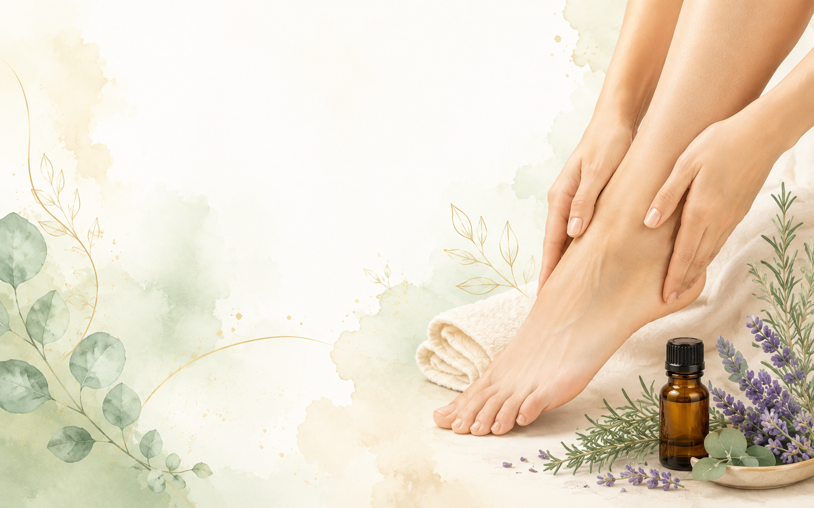

ABOUT FOOT & AROMA
足元から、
毎日を少し心地よく。
Foot & Aromaは、 アロマテラピー・リフレクソロジー・ 足裏セルフケアを中心に、 毎日の暮らしに取り入れやすい情報を紹介するサイトです。
特別なことを始めなくても、 足元や香りに少し目を向けることで、 自分をいたわる時間を作るきっかけになればと考えています。

CONCEPT
足と香りを、もっと身近に。
足元の疲れや重さ、 冷えなどは、 日常生活の中で感じやすい悩みのひとつです。
一方で、 足元のセルフケアについて 「何をすればいいのか分からない」 と感じる人も少なくありません。
Foot & Aromaでは、 難しい専門用語だけに頼らず、 自宅で取り入れやすい方法を 分かりやすく紹介していきます。
OUR POLICY
情報発信について
Foot & Aromaでは、 日常のセルフケアとして参考にしやすい情報を 分かりやすく紹介することを大切にしています。
商品やサービスを紹介する場合は、 内容や特徴が分かりやすく伝わるように努めます。
今後、 一部のページでアフィリエイト広告などを 利用する場合があります。
広告や商品紹介が含まれる場合は、 必要に応じて分かる形で表示します。
FUTURE
情報から、その先のセルフケアへ。
現在はオンラインでの情報発信を中心にしています。
今後は、 アロマテラピーやリフレクソロジーを軸とした サービス展開も検討していきます。
サービス内容が決まり次第、 本サイト内でご案内します。
DISCLAIMER
免責事項
当サイトは、 一般的なセルフケアに関する情報を 提供することを目的としています。
医療行為・診断・治療を目的としたものではありません。
強い痛みや腫れ、しびれ、 その他の症状がある場合は、 必要に応じて医療機関や専門家へ相談してください。
掲載情報については、 内容の正確性・安全性に配慮しますが、 利用についてはご自身の判断でお願いいたします。